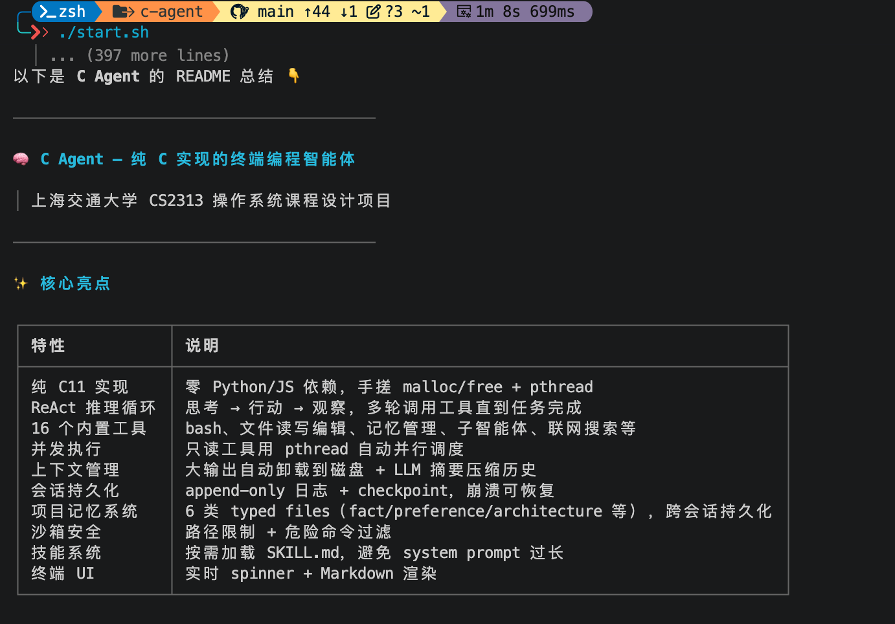

自然语言驱动的编程闭环
读取代码、修改文件、执行 Shell，将工具结果返回模型，继续判断下一步行动。
理解任务调用工具观察结果
C11 / TERMINAL CODING AGENT
从一句指令，到实际执行。
用 C 构建终端编程智能体，让模型读写代码、执行命令，并在多轮工具调用中完成任务。
从基础工具调用出发，逐步补齐长任务需要的状态、记忆与协作能力。
读取代码、修改文件、执行 Shell，将工具结果返回模型，继续判断下一步行动。
只读工具批次并发执行；子智能体使用独立上下文处理后台任务。
会话可恢复，记忆跨会话保留。大型工具输出卸载后，仍可按路径取回。
INSIDE THE RUNTIME
如何调度、如何回收、如何恢复，是这个项目的核心设计问题。
当同一批工具全部为只读操作时，通过 pthread 并发执行。只要包含写操作或未知工具，整批就回退到串行。
每个线程写入独立结果槽，主线程等待完成后，按原始请求顺序组装结果，保持工具调用与回复一一对应。
read_fileagent.cread_fileexecutor.cread_filecontext.cpthread_join()等待全部完成执行可以并发，返回保持请求顺序。
工具输出过大时，先把完整内容写入会话独立的 offload 目录，在对话中保留预览、文件路径与恢复提示。
当卸载策略无法继续有效回收时，再通过 LLM 将旧对话整理成结构化摘要，保留任务目标、已完成工作和下一步。
offload/0.txt[OFFLOADED_TOOL_OUTPUT]preview + path + recovery需要原文时，通过 read_file 取回GoalCompletedNext StepsMANIFEST.md 记录来源与文件索引。
会话用 append-only 日志记录新增消息，定期写入 checkpoint。恢复时加载快照，再重放后续日志。
长期记忆另存为六类 Markdown 文件。新会话只注入 preference 和 fact，其余知识通过 recall 按需查询。
checkpoint.json完整快照log.jsonl增量日志pattern.mdpreference.mdarchitecture.mdbug.mdworkflow.mdfact.md蓝色项在新 Agent 创建时注入提示词。
工具执行状态与 Markdown 回复，让每一轮操作都有清晰的反馈。

实时显示思考状态、工具执行结果和耗时。独立渲染线程统一管理动态输出。
通过 /session 恢复历史会话；用 /remember 保存值得长期保留的信息。
基于课程提供的基础框架，完成核心功能，并围绕实际使用扩展系统能力。
完成 Shell 工具、ReAct 循环、注册表与并发执行器，并实现上下文卸载和摘要策略。
agent/ · tools/ · context/加入会话恢复、分类记忆、按需加载的 Skills、后台子智能体，以及联网工具。
core/session.c · core/memory.c · core/skills.c隔离不同会话的卸载文件，避免恢复内容被再次卸载；同步终端输出，并在 JSON 序列化前清理非法 UTF-8。
context/policy_offload.c · ui/ · agent/llm_client.c上下文预算使用字符数估算 token，后续可接入真实 tokenizer 并纳入完整请求开销。
交互体验模型回复目前整段返回，后续可加入流式输出和端到端评测。
执行边界文件工具有路径检查，Shell 使用危险命令过滤；尚未实现进程级沙箱隔离。
实现细节、运行方式与设计记录，都在项目中。